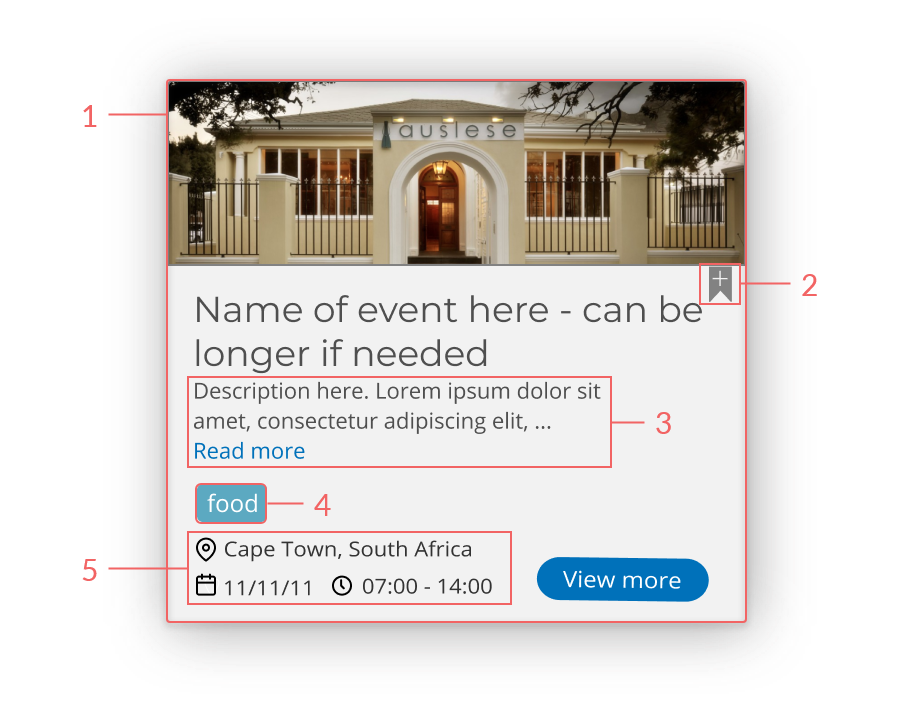

Eventerprise
UX Design Internship

Goal: Work alongside the development team in revamping Eventerprise website pages for a better visual and user experience
Date: Mid June 2018 - Mid Sept 2018
Duration: 3 months
Skills: UX Design, Web Design, Wireframing, Mockups, A/B Testing, Development, User Flow Mapping, Heatmaps (Website Analytics)
Tools: Figma, Adobe Photoshop, Trello, Basecamp, LuckyOrange
Role: UX Design Intern
Overview
Eventerprise is a global events platform - the first of its kind in the world - that helps private and corporate clients to connect with event managers, - services, - products and venues (event suppliers). Eventerprise aims to help people that need to organize events and also event vendors that would like to promote their business. The transparency on Eventerprise platform allows clients to view every vendor's review and enable clients to request for proposal/quotes for the service that they're searching.
My Team
During my summer internship at Eventerprise, I joined the Content department as a UX Design Intern and work closely with the VP of Communications, Marc Steyn.
Some of my work during the internship includes:
- Conducted competitive analysis of other websites that operate in the event industry.
- Designed responsive screens (desktop and mobile).
- Created user journey maps and mockups.
- Re-designed web pages for better user experience and visual (the pricing page, the user dashboard, event listing, RFP listing, etc.).
- Identified design problems and devised elegant solutions through a weekly UX test report.
- Compiled weekly website analytics reports to be analyzed for further actions.
- Suggested new features based on research.
- Designed pop-ups.
Project Summary
One of the major projects that I worked on during my internship was to re-design a series of event listing pages. The goal is to achieve a design that is visually appealing and simple for users to interact. This project required me to create mock-ups of four pages in total which includes: "List my event" form page, "Browse event" page, "Event listing search result" page, and "Individual event listing" page.
Pain Points
Before I started re-designing, I list some of the pain points of the current design in order to get a better idea of which elements on the page needed to be improved for better user experience. Below are some of the pain points that I have found:
Browse Event & Event Listing Search Result Page

- The header style is not consistent with the rest of the web pages. The other web pages have a header with images instead of a solid color background.
- The current design doesn't allow users to have the ability to save or bookmark the events that they're interested in.
- The event listing cards used too much space, and this doesn't allow the user to scan through more of the events available on one page.
- The visual of the current design isn't too captivating. It looks too empty and flat.
- The current card design doesn't allow the user to quickly get a grasp of what's the event is all about. Rather than presenting a lengthy description of the event, the user should be able to scan quickly and decide whether or not they would like to read more about a particular event description.
Individual Event Listing

- The header style is not consistent with the rest of the web pages. This page should have a similar style as the vendors' profile to keep consistency throughout the pages.
Solutions
After I have listed all of the pain points of the current design, I researched other events web app like Evensi, Facebook events, and Eventbrite to compare and contrast the designs. Then I scoped the features of the new design and envisioned possible useful features. As a result, I proposed some ideas to my manager:
- Use a card design for the Browse Event & Event Listing Search Result Page
The card design allows the user to view more events at once rather than showing only one event per rows. As a UX designer, it's crucial to know 'just the right amount of information' needed to be presented to avoid overloading users with unnecessary information.
- Add a bookmark button
The purpose of adding the bookmark button is to give users the ease of being able to save the events they're interested in and could go back to it later conveniently. Since this is a new feature, I also need to create a new user flow and map the easiest way for user to access their bookmarked events. After mapping a couple of access possibilities and discussion with my manager, we decided that the best way to access bookmarks is through the user’s dashboard.
- Short descriptions
A short description is all that's needed for the user to know if they're interested in the event or not. By showing only a short description and a "read more" link, this allows the user to choose for themselves whether they wanted to read more about the event or not.
- Add tags functionality
The tags function purpose is to scan the event listing cards easily, what's the event is all about, and also to give the ability to search for events more easily.
- Use icons to present the event details
People are faster in recognizing pictorial elements such as icons compared to recognizing words. The main purpose here is for speed so that users could scan through more event cards. The icons used are common icons in regards to avoiding confusion that will reduce the speed.
Style Guide
Once all the pain points and solutions for the new design are listed, I familiarized myself with the company's style guide document before I start designing. Re-aligning myself to the company's style guide is the number one priority to keep my design consistent with the rest of Eventerprise web pages. That's why, after all of the mockup screens are done, I re-check and re-align my design with the style guide once more to make sure that everything is in order.

Design Results
The difference between Browse Event page and the Search Result page is the page title above the search bar that changes according to what the user is seeking. When the user uses the search bar, in this example, to search for a rock concert in Cape Town, the page title changes to 'Rock Concert in Cape Town'.
Mobile version

Browse Event page

Search Result page

Individual Event Listing page

Other Notable Project
The pricing page redesign was one of my notable projects while working at Eventerprise, generating new leads with higher web engagement. By paying attention to the list of notes that one of the digital business interns has compiled, I was able to create a more elegant version of the company's pricing page to present important information that our client needs.

Takeaways
It has been an amazing three months, and I have learned an immense amount of knowledge from working at Eventerprise, not only technical skills but also personal skills. I'm more then ready to keep up with a fast-paced work environment like Eventerprise now while still keeping the quality of my work as the priority. Eventerprise has given me proof that continuously analyzing and figuring out a better way to present information to the customer is the key to success. After all, what's important is not only the visual, the experience that our customer gets from interacting with our platform is the primary target. Before ending my internship at Eventerprise, I have written a blog post summarizing my experience at Eventerprise which you can read right here .